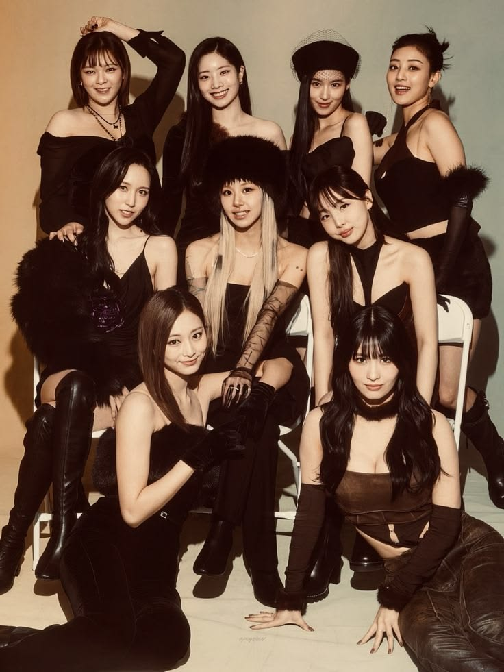
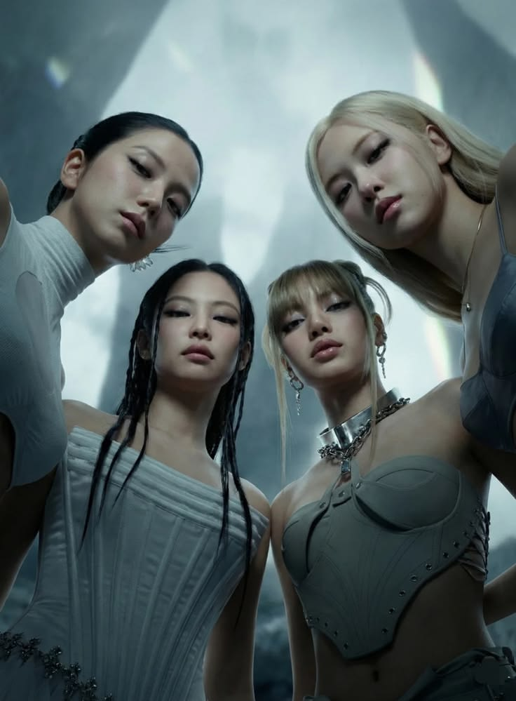
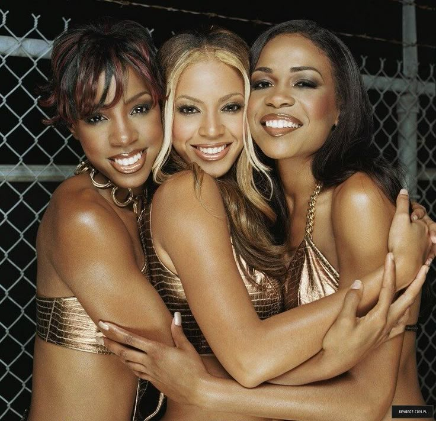
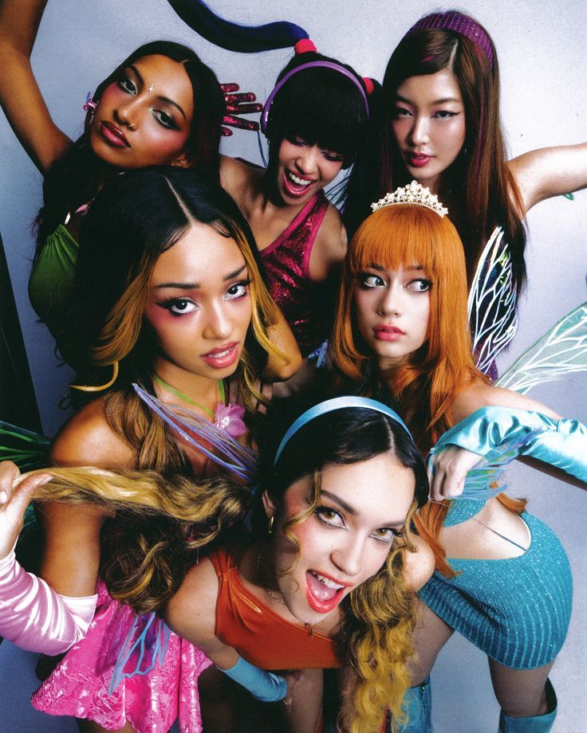

These groups represent teamwork, confidence, discipline, creativity, and growth. Every group below has inspired millions through music, performances, friendships, and unforgettable stage presence.

TWICE became one of the most successful K-pop girl groups through hard work, synchronization, and teamwork. Their performances are known for being energetic, polished, and perfectly coordinated. The members support each other both on and off stage, creating a strong bond that fans admire around the world. Their success demonstrates how dedication, consistency, and unity can transform a group into global stars.

BLACKPINK changed the global music industry with their charisma, confidence, and powerful performances. Each member brings a unique personality and talent to the team while still maintaining strong chemistry together. Their influence in music, fashion, and performance demonstrates the importance of individuality within teamwork while continuously improving their craft.

Destiny’s Child helped create the blueprint for modern girl groups through iconic harmonies, unforgettable performances, and strong stage presence. Their music focused on empowerment, confidence, and resilience. The group’s vocal chemistry and professionalism showed how important discipline and practice are in building legendary performances that stand the test of time.
Fifth Harmony demonstrated how different personalities and vocal styles can come together to create a successful team. Their journey highlighted growth, friendship, and adapting to challenges while continuing to perform together. They inspired many young artists through their confidence, teamwork, and ability to connect with audiences worldwide.
Little Mix became known for their strong vocals, empowering music, and incredible friendship as a group. Their chemistry, stage presence, and confidence inspired many young people around the world. Through teamwork and individuality, they showed how a group can remain powerful while allowing each member’s personality to shine.

KATSEYE represents the new generation of global girl groups created through international training and collaboration. Their journey highlights growth, resilience, teamwork, and ambition while blending different cultures and talents together. The group inspires future artists to dream globally while continuing to improve through dedication and hard work.